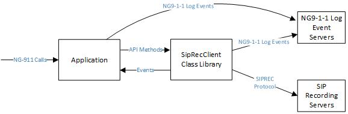
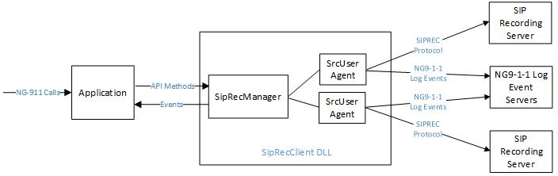

Introduction
The SipRecClient class library is a .NET DLL that Next Generation 9-1-1 (NG9-1-1) applications can use to record multimedia NG9-1-1 calls. Applications that use the SipLib and the Ng911Lib class libraries can use this class library. The following block diagram shows the relationship between the SipRecClient class library, the NG9-1-1 application, SIP Recording Server(s) (SRS) and NG9-1-1 Log Event Servers.

Applications that anchor the media of NG9-1-1 multimedia calls can use this class library. This class library supports audio, video, Real Time Text (RTT) and Message Session Relay Protocol (MSRP) text media.
Applications initiate and terminate recording sessions using Application Programming Interface (API) method calls to the classes in the SipRecClient class library. The classes of the SipRecClient class library notify the application of asynchronous events.
The SipRecClient library implements the SIP Recording Client (SRC) interface to one or more SIP Recording Servers (SRS). Each SRS performs the actual media management and storage functions. The following two RFCs define the active SIP recording protocol, which is often referred to as SIPREC.
- Session Recording Protocol, IETF, RFC 7866, May 2016.
- Session Initiation Protocol (SIP) Recording Metadata, IETF, RFC 7865.
The SipRecClient classes send NG9-1-1 log events that relate to SIPREC calls to one or more NG9-1-1 Log Event servers. See NG9-1-1 Event Logging, below. The application is responsible for sending all other log events to the NG9-1-1 Log Event Servers. See Section 4.12.3 and Appendix E.8 of NENA-STA-010.3b.
The following figure shows the main classes in the SipRecClient class library.

The application interacts with the SrcManager class. The SrcManager class creates and manages one or more SrcUserAgent objects based on the configuration settings received from the application. Each SrcUserAgent implements the SIP Recording Client (SRC) portion of the SIPREC protocol and interfaces to one SIP Recording Server (SRS). All SrcUserAgent objects record all calls sent by the application.
Each SrcUserAgent is independent and runs in its own task and binds to a unique IP endpoint. The SipRecClient class library supports both IPv4 and IPv6.
Getting Started
An application initializes the SipRecClient class library by performing the following steps.
- Create an instance of the SipRecSettings class and populate it with the configuration settings for each SrcUserAgent.
- Create an instance of the SrcManager class.
- Hook the events of the SrcManager object.
- Call the Start() method of the SrcManager object.
When the application is shutting down, it must call the Shutdown() method of the SrcManager class. This method performs an orderly shutdown by forcing all SrcUserAgents to terminate any recordings that are currently in progress. Each SrcUserAgent will close its network connections and release the network resources that it is using.
Recording Calls
Starting a New Recording
When a new NG9-1-1 call is received and answered, the application starts recording that call by performing the following steps.
- Create an instance of the SrcCallParameters class based on the information that it has for the call. The SrcCallParameters class contains all of the information about the call that each SrcUserAgent will need to set up a SIPREC call to its associated SIP Recording Server.
- Call the StartRecording() method of the SrcManager class passing in the SrcCallParameters object.
Ending a Recording
When a call that is being recorded ends, the application calls the StopRecording() method of the SrcManager class. The declaration of this method is:
public void StopRecording(string strCallId);
The strCallId parameter is the SIP Call-ID header value of the call that is being recorded.
NG9-1-1 Event Logging
Each SrcUserAgent logs the following recording related NG9-1-1 events.
- RecCallStartLogEvent
- RecCallEndLogEvent
- RecMediaStartLogEvent
- RecMediaEndLogEvent
- CallSignalingMessageLogEvent